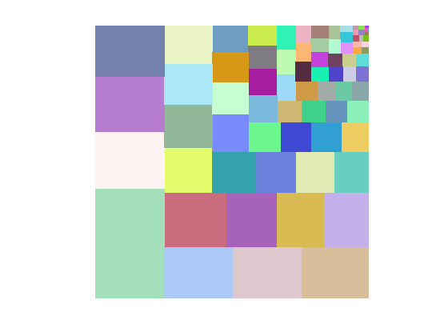
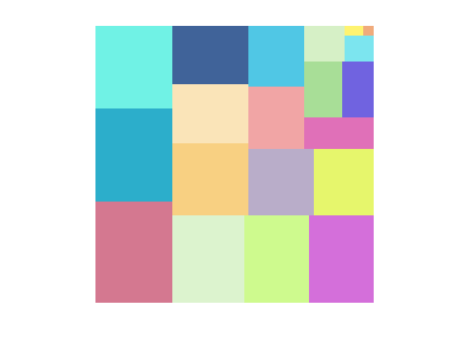
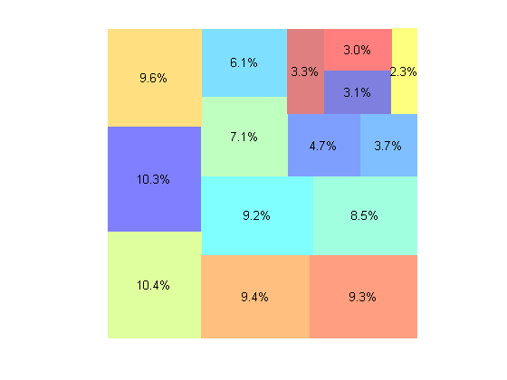
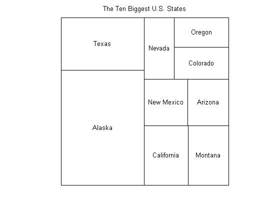
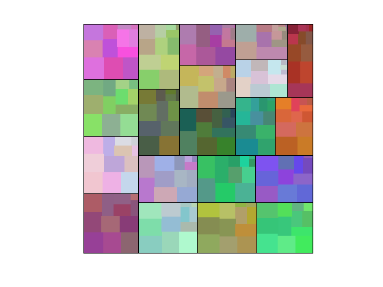

Using Treemap
Treemaps display data using the relative areas of nested rectangles. See http://en.wikipedia.org/wiki/Treemapping for more information.
The TREEMAP M-file associated with this submission is one implementation of the treemap concept, but it can use your help. How would you improve its argument list (API) or its implementation? We want you to tell us.
Send your suggestions and improved code to Joe Hicklin with the subject line "treemap" (mailto:joe@mathworks.com&subject=treemap) and we'll incorporate all the best ideas into an updated version of the code.
Contents
By itself
You can call treemap by itself and it will run with fake data.
cla treemap;

With data
Here's how you pass in your own data.
cla data = rand(1,20); treemap(data);

Custom colors and labels
You can capture the rectangles and use plotRectangles to display them with your own colors and labels.
n = 15; data = rand(1,n); colors = (jet(n)+1)/2; % Add labels labels = {}; for i = 1:n labels{i} = sprintf('%2.1f%%',100*data(i)/sum(data)); end cla rectangles = treemap(data); plotRectangles(rectangles,labels,colors)

Another example
data = ... {'Alaska',571951; 'Texas' 261797; 'California',155959; 'Montana',145552; 'New Mexico',121356; 'Arizona',113635; 'Nevada',109826; 'Colorado',103718; 'Oregon',95997}; colors = ones(10,3); rectangles = treemap([data{:,2}]); labels = data(:,1); cla plotRectangles(rectangles,labels,colors) outline(rectangles) axis([-0.01 1.01 -0.01 1.01]) title('The Ten Biggest U.S. States')

Nested treemaps
You can plot treemaps within treemaps
m = 12; n = 20; data = rand(m,n); % Lay out the column totals level1 = sum(data); cla reset r = treemap(level1); % Lay out each column within that column's rectangle from the overall % layout for j = 1:n colors = (3*repmat(rand(1,3),m,1) + rand(m,3))/4; rNew = treemap(data(:,j),r(3,j),r(4,j)); rNew(1,:) = rNew(1,:) + r(1,j); rNew(2,:) = rNew(2,:) + r(2,j); plotRectangles(rNew,[],colors) end outline(r) axis([-0.01 1.01 -0.01 1.01])
